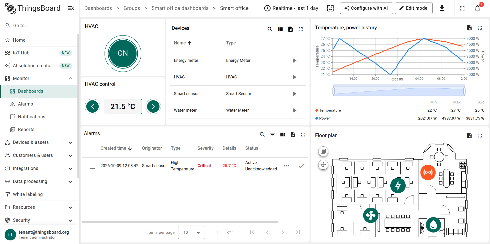

Screenshot
The wrapper for a real product screen: the image at its natural pixel size, scaled down by CSS, with 6px rounding, a soft shadow and no border. With kit.js it fades in when it loads and opens in the lightbox on click. Annotations are children positioned in percent of the image box, so they hold at any rendered size. A .ring marks one element and is drawn 8px outside it with a wide glow, so it reads as an overlay rather than a focus state; .ring--pill follows a pill-shaped control. A .patch paints over a region while a post is in review; once it settles, the same rectangle goes into the post's images.json and the pipeline bakes it into the asset, so the lightbox and any 2x file carry the fix too.
Lightbox switches. data-full="…" on an image opens a larger file than the one shown inline. data-no-lightbox opts out: on an image, on a wrapper such as a figure or a grid, on .blog-content for a whole post, or on <html> to disable it for the page. The wide panel below carries it, so that screen does not open; the cursor follows.

Panel
A gradient surface under a .shot or a .video. At the default width it holds a dialog or a detail cut out of its screen, at most 520px wide. --tall adds room above and below a short crop. --bleed makes the image the panel: edge to edge, no padding, no shadow, no lightbox, for a capture whose own background does the framing. --wide lets a whole screen fill the panel with a small margin, which is how a capture or a recording with no browser frame gets one; it needs the full row, so it goes in a .wide block. Light is the default. --dark runs from the product teal into steel blue and is the highlight: when a section has several panels, at most one is dark, and it is the one that matters most.
Light
The default: a dialog at the panel's own width.

Dark
The highlight, one per section at most. Here with a pill ring and a patch baked into the asset.

Bleed
The image is the panel, for a capture that frames itself.

Tall
Air above and below a short crop.

Wide
A whole screen with a small margin, in a full-row block. This one is opted out of the lightbox, so the cursor stays plain.

Before and after
Two captures of the same screen, revealed with a drag handle; the tags name the two versions. Both captures must share window size, zoom and scroll position, or the handle reveals differences that are not the point. The logic is the one the use-case pages already ship; the kit only restyles the handle and adds the tags.


Looped clip
The .shot of moving things: a short muted loop with the same rounding and shadow and the same two placements. On its own it takes the column, for a window capture that frames itself. Inside a .panel, light or dark, it gets the panel's margin and gradient, which is how a full-screen recording with no browser bar gets a frame: --wide for a whole screen, the default width for a dialog-sized clip. It autoplays muted, pauses when scrolled out of view, and under reduced motion shows the poster with a play button. Files come out of tools/prepare-video.sh: H.264 and VP9 with no audio, scaled to twice the column, plus a poster.
Layouts
One grid for anything side by side: two columns by default, three with --3, a tighter gap with --tight, and .wide on a child to span the row. A block is a small heading, a sentence and a visual, with no chrome around it. Everything stacks to one column on phones. The Panel section above is a grid of four blocks and one wide one.
Cards
The bordered version of a block, for a repeated unit the border helps to group. Icon cards carry a 48px tile from the diagram palette, so icons and diagrams share one set of colours.
Steps
Two ways to show a real sequence, where the order is information. The stepper is the horizontal one: number, connector, title and a short line, stacking to a vertical rail on phones. The numbered cards are the roomier version for steps that need a sentence or two.
- Update to the latest 4.3 patch
Follow the upgrade instructions for your platform.
- Get your free license key
Register your deployment with the registration guide.
- Upgrade to 4.4
Then follow the Community Edition upgrade guide.
Follow the upgrade instructions for your platform.
Register your deployment with the registration guide.
Then follow the Community Edition upgrade guide.
Diagram
Boxes and arrows in the style of the docs diagrams: a tinted box with a 1px stroke, a square icon tile in the family's dark shade, bold labels, and short arrows coloured like the box they leave. Seven colour families, the same ones the 105 docs SVGs use. Under review: the component ships for simple rows; layered diagrams, a lightbox for them and an HTML-to-SVG source are on the roadmap in the README.
A simple row, no background
All seven families on the dotted grid
The grid variant is for diagrams with more than one row, or one that sits next to an exported SVG.
Call to action
The last block before the share row: one line and two buttons, bordered, no fill.
Ready to try 4.4?